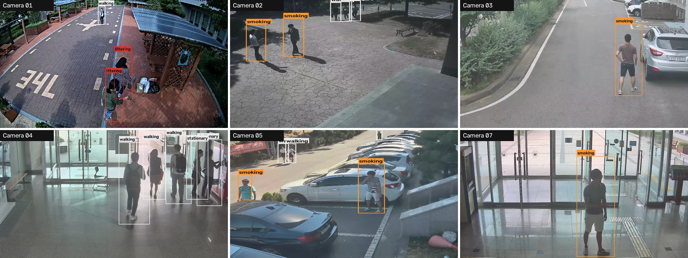

<title>Gate 1 on ICVL</title>
<meta name="claude:viewport-fit-sides" content="cover">
<link rel="preconnect" href="https://fonts.googleapis.com">
<link rel="preconnect" href="https://fonts.gstatic.com" crossorigin>
<link rel="stylesheet" href="https://fonts.googleapis.com/css2?family=Space+Grotesk:wght@500;600;700&family=Outfit:wght@400;500;700;800&display=swap">
<style>
/* Matches the team deck: soft grey slides with white circles, black grotesk headings,
   white rounded cards with grey icon discs, light-blue flow boxes, dark table headers. */
:root {
  --page: #e4e5e7;
  --slide: #f4f4f4;
  --circle: rgba(255, 255, 255, 0.75);
  --card: #ffffff;
  --ink: #0d0d0d;
  --muted: #62666c;
  --line: #e2e3e5;
  --disc: #6b6b6b;
  --disc-ink: #ffffff;
  --blue: #b7d2fb;
  --blue-soft: #e3eefd;
  --navy: #133d6b;
  --th: #383838;
  --th-ink: #ffffff;
  --dots: #93abc9;
  --red: #c4302b;
  --orange: #ff9a28;
  --shadow: 0 6px 22px rgba(20, 24, 30, 0.07);
  --head: "Space Grotesk", "Helvetica Neue", Arial, sans-serif;
  --body: "Outfit", "Segoe UI", system-ui, -apple-system, sans-serif;
}
@media (prefers-color-scheme: dark) {
  :root:not([data-theme="light"]) {
    --page: #0e1013; --slide: #181b20; --circle: rgba(255, 255, 255, 0.035); --card: #22262c; --ink: #eef0f2;
    --muted: #a0a6ae; --line: #30353c; --disc: #4a5059; --disc-ink: #eef0f2; --blue: #2b4a74; --blue-soft: #1f2f44;
    --navy: #8fb6ec; --th: #2e333a; --th-ink: #eef0f2; --dots: #4f6a8c; --red: #f06560;
    --shadow: 0 6px 22px rgba(0, 0, 0, 0.35); color-scheme: dark;
  }
}
:root[data-theme="dark"] {
  --page: #0e1013; --slide: #181b20; --circle: rgba(255, 255, 255, 0.035); --card: #22262c; --ink: #eef0f2;
  --muted: #a0a6ae; --line: #30353c; --disc: #4a5059; --disc-ink: #eef0f2; --blue: #2b4a74; --blue-soft: #1f2f44;
  --navy: #8fb6ec; --th: #2e333a; --th-ink: #eef0f2; --dots: #4f6a8c; --red: #f06560;
  --shadow: 0 6px 22px rgba(0, 0, 0, 0.35); color-scheme: dark;
}

body {
  background: var(--page); color: var(--ink); font-family: var(--body); font-size: 17px; line-height: 1.45;
  padding-left: max(16px, env(safe-area-inset-left, 0px));
  padding-right: max(16px, env(safe-area-inset-right, 0px));
  padding-block: 28px 56px;
}
.deck { max-width: 1120px; margin: 0 auto; display: flex; flex-direction: column; gap: 28px; }

.slide {
  position: relative; min-width: 0;   /* no overflow clip: a slide grows instead of cutting content */
  aspect-ratio: 16 / 9;
  background:
    radial-gradient(circle at 30% -8%, var(--circle) 0 19%, transparent 19.2%),
    radial-gradient(circle at 92% 108%, var(--circle) 0 30%, transparent 30.2%),
    radial-gradient(circle at 4% 70%, var(--circle) 0 4%, transparent 4.2%),
    var(--slide);
  border-radius: 6px;
  padding: clamp(24px, 5vw, 60px) clamp(20px, 5.5vw, 72px);
  display: flex; flex-direction: column; gap: clamp(16px, 2.4vw, 28px);
}
.slide > * { position: relative; }
.dots { display: flex; gap: 7px; }
.dots i { width: 4px; height: 4px; border-radius: 50%; background: var(--dots); }
.slide .dots.br { position: absolute; right: clamp(20px, 5.5vw, 72px); bottom: clamp(18px, 3vw, 34px); }
.pg { position: absolute; left: clamp(20px, 5.5vw, 72px); bottom: clamp(16px, 3vw, 30px); font-size: 12px; color: var(--muted); letter-spacing: 0.04em; }

h1, h2 { font-family: var(--head); font-weight: 600; letter-spacing: -0.03em; line-height: 1; margin: 0; text-wrap: balance; }
h1 { font-size: clamp(44px, 8vw, 92px); }
h2 { font-size: clamp(30px, 4.4vw, 50px); }
h3 { font-family: var(--body); font-weight: 800; font-size: 19px; margin: 0; }
p { margin: 0; }
.kicker { font-family: var(--body); font-weight: 800; font-size: 18px; }
.sub { font-style: italic; font-size: clamp(17px, 2vw, 22px); color: var(--ink); }
.muted { color: var(--muted); }
.note { font-size: 14px; color: var(--muted); }
b, strong { font-weight: 700; }

/* title + statement */
.center { justify-content: center; }
.statement { font-size: clamp(24px, 3.4vw, 40px); line-height: 1.3; max-width: 26ch; font-weight: 400; }
.statement b { font-weight: 800; color: var(--muted); }
.presenters { display: flex; flex-direction: column; gap: 4px; font-size: 15px; }

/* stat cards */
.stats { display: grid; grid-template-columns: repeat(auto-fit, minmax(220px, 1fr)); gap: 18px; }
.stat { background: var(--card); border-radius: 18px; box-shadow: var(--shadow); padding: 22px 24px; display: flex; flex-direction: column; gap: 8px; min-width: 0; }
.stat .k { font-family: var(--head); font-weight: 700; font-size: clamp(38px, 5vw, 56px); letter-spacing: -0.03em; line-height: 1; font-variant-numeric: tabular-nums; }
.stat .l { font-weight: 700; }
.stat .s { font-size: 14px; color: var(--muted); }

/* icon cards (rules) */
.cards { display: grid; grid-template-columns: repeat(3, minmax(0, 1fr)); gap: 12px; }
.card { background: var(--card); border-radius: 16px; box-shadow: var(--shadow); padding: 12px 14px; display: grid; grid-template-columns: 46px 1px 1fr; gap: 12px; align-items: center; min-width: 0; }
.card h3 { font-size: 17px; }
.card.final { grid-column: 1 / -1; }
@media (max-width: 980px) { .cards { grid-template-columns: repeat(2, minmax(0, 1fr)); } }
@media (max-width: 600px) { .cards { grid-template-columns: 1fr; } }
.card .rule { background: var(--line); align-self: stretch; }
.card .txt { display: flex; flex-direction: column; gap: 2px; min-width: 0; }
.card .txt span { font-size: 15px; }
.card .tag { font-size: 12.5px; color: var(--muted); }
.card.final { border: 2px solid var(--navy); }
.disc { width: 46px; height: 46px; border-radius: 50%; background: var(--disc); color: var(--disc-ink); display: grid; place-items: center; }
.disc svg { width: 24px; height: 24px; stroke: currentColor; fill: none; stroke-width: 1.8; stroke-linecap: round; stroke-linejoin: round; }

/* flow (light-blue boxes) */
.flow { display: grid; grid-template-columns: minmax(180px, 260px) 1fr; gap: 10px 36px; align-items: center; }
.flow .box { background: var(--blue); border: 1.5px solid var(--navy); border-radius: 10px; padding: 12px 14px; text-align: center; font-weight: 800; font-size: 16px; position: relative; }
.flow .box.dim { background: var(--blue-soft); color: var(--muted); border-color: var(--dots); }
.flow .box:not(.last)::after { content: ""; position: absolute; left: 50%; bottom: -11px; width: 1.5px; height: 10px; background: var(--ink); }
.flow .desc { font-size: 15.5px; }
.flow .desc .m { color: var(--muted); font-size: 13.5px; }

/* budget bar */
.budget { display: flex; height: 38px; border-radius: 10px; overflow: hidden; background: var(--card); box-shadow: var(--shadow); font-size: 13.5px; font-weight: 700; }
.budget span { display: flex; align-items: center; padding: 0 12px; white-space: nowrap; overflow: hidden; }
.budget .det { background: var(--navy); color: var(--slide); }
.budget .pose { background: var(--blue); color: var(--ink); }
.budget .free { color: var(--muted); font-weight: 500; }

/* tables */
.table-wrap { overflow-x: auto; border-radius: 4px; }
table { border-collapse: collapse; width: 100%; font-size: 16px; background: var(--card); font-variant-numeric: tabular-nums; }
th { background: var(--th); color: var(--th-ink); font-weight: 700; text-align: left; padding: 14px 16px; font-size: 15px; }
td { padding: 13px 16px; border-bottom: 1px solid var(--line); vertical-align: middle; }
td:first-child { font-weight: 700; }
.num { text-align: right; white-space: nowrap; }
tr.now td { background: var(--blue-soft); }
tr.total td { font-weight: 800; }

/* two-column numbered lists */
.cols { display: grid; grid-template-columns: repeat(auto-fit, minmax(300px, 1fr)); gap: 20px; }
.panel { background: var(--card); border-radius: 18px; box-shadow: var(--shadow); padding: 20px 24px; display: flex; flex-direction: column; gap: 12px; min-width: 0; }
.panel h3 { font-size: 20px; }
.nums { list-style: none; padding: 0; margin: 0; display: flex; flex-direction: column; gap: 10px; }
.nums li { display: grid; grid-template-columns: 52px 1fr; gap: 12px; align-items: baseline; }
.nums .n { font-family: var(--head); font-weight: 700; font-size: 28px; line-height: 1; text-align: right; color: var(--muted); }
.nums li:first-child .n { color: var(--ink); }

/* takeaway strip */
.take { background: var(--card); border-left: 5px solid var(--navy); border-radius: 6px; padding: 14px 20px; font-weight: 700; font-size: 17px; }

/* dataset slide */
.data { display: grid; grid-template-columns: minmax(0, 2.4fr) minmax(200px, 1fr); gap: 24px; align-items: start; }
.data figure { margin: 0; display: flex; flex-direction: column; gap: 6px; min-width: 0; }
.data img { width: 100%; height: auto; border-radius: 10px; display: block; }
.data figcaption { font-size: 13px; color: var(--muted); }
.facts { display: flex; flex-direction: column; gap: 14px; }
.facts > div { display: flex; flex-direction: column; gap: 2px; border-left: 3px solid var(--navy); padding-left: 12px; }
.facts .k { font-family: var(--head); font-weight: 700; font-size: 30px; letter-spacing: -0.02em; line-height: 1.05; }
.facts span:not(.k) { font-size: 14.5px; }
.labels { display: flex; flex-wrap: wrap; gap: 8px; }
.lab { font-size: 14px; font-weight: 700; padding: 5px 12px; border-radius: 999px; background: var(--card); box-shadow: var(--shadow); border-left: 6px solid var(--line); }
.lab.lit { border-left-color: #dc3028; }
.lab.smk { border-left-color: #ff9628; }
.lab.still { border-left-color: var(--navy); }
.lab.plain { font-weight: 500; color: var(--muted); }

/* video slides */
.vid { display: grid; grid-template-columns: minmax(0, 1.7fr) minmax(220px, 1fr); gap: 24px; align-items: start; }
.vid video { width: 100%; max-width: 100%; aspect-ratio: 16 / 9; background: #000; border-radius: 10px; display: block; }
.chapters { list-style: none; padding: 0; margin: 0; display: flex; flex-direction: column; gap: 10px; font-size: 15px; }
.chapters li { display: grid; grid-template-columns: 44px 1fr; gap: 8px; align-items: baseline; }
.chapters .ts { font-weight: 800; color: var(--navy); font-variant-numeric: tabular-nums; }
.chapters .miss { color: var(--red); font-weight: 700; }
.key { display: flex; flex-wrap: wrap; gap: 6px 18px; font-size: 13px; color: var(--muted); }
.key i { display: inline-block; width: 16px; height: 4px; margin-right: 6px; vertical-align: middle; border-radius: 1px; }

@media (max-width: 760px) {
  .slide { aspect-ratio: auto; padding-bottom: 56px; }
  .flow { grid-template-columns: 1fr; gap: 6px; }
  .flow .box::after { display: none; }
  .flow .desc { margin-bottom: 10px; }
  .vid, .data { grid-template-columns: 1fr; }
}
</style>

<main class="deck">

<!-- 1 · title -->
<section class="slide center" aria-labelledby="s1">
  <div class="dots"><i></i><i></i><i></i><i></i><i></i><i></i><i></i><i></i><i></i></div>
  <p class="kicker">SUTD X Panasonic · Stage 1</p>
  <div>
    <h1 id="s1">Gate 1</h1>
    <p class="sub">The YOLO pre-filter, tested on real CCTV</p>
  </div>
  <div class="presenters"><span>Presented by</span><b>Ian</b></div>
  <div class="dots br"><i></i><i></i><i></i><i></i><i></i><i></i><i></i><i></i><i></i></div>
</section>

<!-- 2 · statement -->
<section class="slide center" aria-labelledby="s2">
  <p class="kicker" id="s2">What gate 1 does</p>
  <p class="statement">Watch <b>every frame on a CPU</b>, and send only suspicious moments to the VLM. <b>Miss nothing</b>; let the VLM remove the false alarms.</p>
  <span class="pg">02</span>
</section>

<!-- ICVL dataset -->
<section class="slide" aria-labelledby="sd">
  <h2 id="sd">The test data: ICVL</h2>
  <div class="data">
    <figure>
      
      <figcaption>One frame from six of the cameras, with ICVL's own labels drawn on.</figcaption>
    </figure>
    <div class="facts">
      <div><span class="k">941</span><span>videos · 10 h</span></div>
      <div><span class="k">11</span><span>real campus CCTV cameras, indoor and outdoor</span></div>
      <div><span class="k">Every person</span><span>labelled every frame: posture, movement, gesture, event</span></div>
    </div>
  </div>
  <div class="labels">
    <span class="note" style="align-self: center">Incidents, whole set:</span>
    <span class="lab lit">Littering · 521</span><span class="lab smk">Smoking · 724</span><span class="lab still">Still 20 s+ · 126</span><span class="lab plain">Phoning · texting · walking · running · cycling</span>
  </div>
  <p class="note">No loitering label, so standing or sitting still 20 s+ stands in. Half the videos tune the gate; the other half is held out for every result here.</p>
  <span class="pg">03</span>
</section>

<!-- 3 · headline numbers -->
<section class="slide center" aria-labelledby="s3">
  <h2 id="s3">At a glance</h2>
  <div class="stats">
    <div class="stat"><span class="k">90%</span><span class="l">of littering caught</span><span class="s">240 of 267 incidents</span></div>
    <div class="stat"><span class="k">1 in 8</span><span class="l">normal people flagged</span><span class="s">down from 1 in 5</span></div>
    <div class="stat"><span class="k">~100 ms</span><span class="l">per frame, laptop CPU</span><span class="s">half the 200 ms budget</span></div>
  </div>
  <p class="note">All results on the ICVL half never used for tuning.</p>
  <span class="pg">04</span>
</section>

<!-- 4 · pipeline -->
<section class="slide" aria-labelledby="s4">
  <h2 id="s4">What runs on every frame</h2>
  <div class="flow">
    <div class="box dim">Camera frames</div><div class="desc">5 frames a second</div>
    <div class="box">YOLO26s</div><div class="desc">Finds people, bags, bottles, cups</div>
    <div class="box">ByteTrack</div><div class="desc">One ID per person across frames</div>
    <div class="box">YOLO26s-pose</div><div class="desc">17 body points per person</div>
    <div class="box">6 rules</div><div class="desc">Reach-down, pose cue, stays put, long in view, item appeared, bag left alone</div>
    <div class="box">Crop check</div><div class="desc">Looks at the image to drop "carrying" and "on the phone" <span class="m">· reach-down and pose cue only</span></div>
    <div class="box dim last">VLM</div><div class="desc">Gets the crop and recent frames</div>
  </div>
  <span class="pg">05</span>
</section>

<!-- 5 · rules -->
<section class="slide" aria-labelledby="s5">
  <h2 id="s5">The rules</h2>
  <div class="cards">
    <div class="card"><div class="disc"><svg viewBox="0 0 24 24"><path d="M12 3v14M6 11l6 6 6-6M5 21h14"/></svg></div><div class="rule"></div>
      <div class="txt"><h3>Reach-down</h3><span>Wrist drops to knee height</span><span class="tag">Littering · bags</span></div></div>
    <div class="card"><div class="disc"><svg viewBox="0 0 24 24"><circle cx="12" cy="4.5" r="2"/><path d="M12 7v7M12 14l-4 7M12 14l4 7M7 10l5-1 5-4"/></svg></div><div class="rule"></div>
      <div class="txt"><h3>Pose cue</h3><span>Moves like a throw or a puff</span><span class="tag">Littering · smoking</span></div></div>
    <div class="card"><div class="disc"><svg viewBox="0 0 24 24"><path d="M12 21s-6-6.2-6-11a6 6 0 0 1 12 0c0 4.8-6 11-6 11z"/><circle cx="12" cy="10" r="2"/></svg></div><div class="rule"></div>
      <div class="txt"><h3>Stays put</h3><span>Same spot for 20 s</span><span class="tag">Loitering · smoking</span></div></div>
    <div class="card"><div class="disc"><svg viewBox="0 0 24 24"><circle cx="12" cy="12" r="8.5"/><path d="M12 7v5l3.5 2"/></svg></div><div class="rule"></div>
      <div class="txt"><h3>Long in view</h3><span>Same area for 60 s+</span><span class="tag">Loitering</span></div></div>
    <div class="card"><div class="disc"><svg viewBox="0 0 24 24"><path d="M8 4h8l-1 4H9z"/><path d="M9 8h6v10a2 2 0 0 1-2 2h-2a2 2 0 0 1-2-2z"/></svg></div><div class="rule"></div>
      <div class="txt"><h3>Item appeared</h3><span>New item away from people</span><span class="tag">Littering</span></div></div>
    <div class="card"><div class="disc"><svg viewBox="0 0 24 24"><path d="M5 9h14l-1.2 11H6.2z"/><path d="M9 9V7a3 3 0 0 1 6 0v2"/></svg></div><div class="rule"></div>
      <div class="txt"><h3>Bag left alone</h3><span>Owner gone for 10 s</span><span class="tag">Unattended items</span></div></div>
    <div class="card final"><div class="disc"><svg viewBox="0 0 24 24"><path d="M6 2v16h16M2 6h16v16"/></svg></div><div class="rule"></div>
      <div class="txt"><h3>Then: crop check</h3><span>Looks at the person 1 s before, at and after. Drops "carrying a bag" and "on the phone".</span><span class="tag">MobileCLIP2-S2 · on reach-down and pose cue</span></div></div>
  </div>
  <span class="pg">06</span>
</section>

<!-- 6 · speed -->
<section class="slide" aria-labelledby="s6">
  <h2 id="s6">Fast enough for a laptop</h2>
  <div class="budget" role="img" aria-label="Indoor CCTV frame: detector and tracker 51 ms, pose 55 ms, 93 ms of the 200 ms budget left">
    <span class="det" style="width: 25.5%">Detect + track 51</span><span class="pose" style="width: 27.5%">Pose 55</span><span class="free" style="flex: 1">93 ms spare of 200 ms</span>
  </div>
  <div class="stats">
    <div class="stat"><span class="k">&lt;0.1 ms</span><span class="l">all rules per frame</span><span class="s">the two networks are the whole cost</span></div>
    <div class="stat"><span class="k">1 core</span><span class="l">per camera at 5 fps</span><span class="s">Apple M3 Pro laptop CPU</span></div>
    <div class="stat"><span class="k">~4%</span><span class="l">of a core for the crop check</span><span class="s">only runs per alert, in the background</span></div>
  </div>
  <span class="pg">07</span>
</section>

<!-- 7 · results -->
<section class="slide" aria-labelledby="s7">
  <h2 id="s7">What was caught</h2>
  <div class="table-wrap">
    <table>
      <thead><tr><th>Event</th><th class="num">Incidents</th><th class="num">Caught</th><th>Note</th></tr></thead>
      <tbody>
        <tr><td>Littering</td><td class="num">267</td><td class="num">240 (90%)</td><td>Mostly by reach-down</td></tr>
        <tr><td>Smoking</td><td class="num">116</td><td class="num">81 (70%)</td><td>90% of people smoking 5 s+</td></tr>
        <tr><td>Still 20 s+</td><td class="num">81</td><td class="num">77 (95%)</td><td>Stands in for loitering</td></tr>
        <tr><td>Still 60 s+</td><td class="num">17</td><td class="num">16 (94%)</td><td></td></tr>
      </tbody>
    </table>
  </div>
  <div class="take">13% of normal people got an alert (230 of 1,795)</div>
  <p class="note">Held-out half: 471 videos, 5.3 h. An alert counts only for the one person it is drawn around.</p>
  <span class="pg">08</span>
</section>

<!-- 8 · false alarms -->
<section class="slide" aria-labelledby="s8">
  <h2 id="s8">False alarms</h2>
  <div class="table-wrap">
    <table>
      <thead><tr><th>Rule</th><th class="num">Alerts</th><th class="num">False</th><th>Mostly</th></tr></thead>
      <tbody>
        <tr><td>Reach-down</td><td class="num">758</td><td class="num">35%</td><td>Carrying a bag or phone low</td></tr>
        <tr><td>Pose cue</td><td class="num">331</td><td class="num">40%</td><td>Phone calls, touching face</td></tr>
        <tr><td>Stays put</td><td class="num">171</td><td class="num">57%</td><td>Waiting around on the phone</td></tr>
        <tr><td>Long in view</td><td class="num">72</td><td class="num">50%</td><td>Staying in one area, not labelled still</td></tr>
        <tr class="total"><td>All rules</td><td class="num">1,362</td><td class="num">40%</td><td></td></tr>
      </tbody>
    </table>
  </div>
  <div class="take">1.2 alerts a minute on footage with nothing happening. These are the VLM's job.</div>
  <span class="pg">09</span>
</section>

<!-- 9 · what changed -->
<section class="slide" aria-labelledby="s9">
  <h2 id="s9">1 in 5 → 1 in 8 normal people flagged</h2>
  <div class="table-wrap">
    <table>
      <thead><tr><th>Setting</th><th class="num">Normal flagged</th><th class="num">Littering</th><th class="num">Smoking</th><th class="num">Alerts / min</th></tr></thead>
      <tbody>
        <tr><td>Last week</td><td class="num">16%</td><td class="num">227</td><td class="num">84</td><td class="num">1.61</td></tr>
        <tr><td>+ reach-down on faster walkers</td><td class="num">19%</td><td class="num">240</td><td class="num">84</td><td class="num">1.70</td></tr>
        <tr class="now"><td>+ crop check (now)</td><td class="num">13%</td><td class="num">240</td><td class="num">81</td><td class="num">1.21</td></tr>
      </tbody>
    </table>
  </div>
  <div class="cols">
    <div class="panel"><h3>Why the crop check helps</h3><p>Body points can't see what's in the hand. Seeing the image before and after separates a drop from a hand that was just low.</p></div>
    <div class="panel"><h3>Tried and dropped</h3><p>Spotting the phone or bag, stricter thresholds, per-person caps. Each lost real incidents as fast as false ones.</p></div>
  </div>
  <span class="pg">10</span>
</section>

<!-- 10 · misses -->
<section class="slide" aria-labelledby="s10">
  <h2 id="s10">Why incidents are missed</h2>
  <div class="cols">
    <div class="panel">
      <h3>Littering · 27 of 267</h3>
      <ul class="nums">
        <li><span class="n">22</span><span>Hand never gets low enough. 18 on one steep camera</span></li>
        <li><span class="n">4</span><span>Alert went to the person next to them</span></li>
        <li><span class="n">1</span><span>Detector barely saw the person</span></li>
      </ul>
    </div>
    <div class="panel">
      <h3>Smoking · 35 of 116</h3>
      <ul class="nums">
        <li><span class="n">22</span><span>Under 5 s, often one puff in a crowd</span></li>
        <li><span class="n">8</span><span>Alert went to a neighbour in the group</span></li>
        <li><span class="n">6</span><span>Pose cue scored it, just under threshold</span></li>
      </ul>
    </div>
  </div>
  <p class="note">Causes can overlap. Found by switching off one filter at a time.</p>
  <span class="pg">11</span>
</section>

<!-- 11 · demo works -->
<section class="slide" aria-labelledby="s11">
  <h2 id="s11">Demo: working</h2>
  <div class="vid">
    <div style="display: flex; flex-direction: column; gap: 8px; min-width: 0">
      <video src="icvl_works.mp4" controls preload="metadata" playsinline aria-label="Gate 1 catching littering, smoking and a person standing still on ICVL videos"></video>
      <div class="key"><span><i style="background: var(--orange)"></i>Orange = sent to the VLM</span><span><i style="background: var(--red)"></i>Red = labelled person</span></div>
    </div>
    <ol class="chapters">
      <li><span class="ts">0:05</span><span>Bag put down: reach-down</span></li>
      <li><span class="ts">0:21</span><span>Throw: pose cue</span></li>
      <li><span class="ts">0:36</span><span>New item on the ground</span></li>
      <li><span class="ts">0:54</span><span>Smoking: pose cue</span></li>
      <li><span class="ts">1:06</span><span>Standing still 20 s</span></li>
    </ol>
  </div>
  <span class="pg">12</span>
</section>

<!-- 12 · demo misses -->
<section class="slide" aria-labelledby="s12">
  <h2 id="s12">Demo: not working</h2>
  <div class="vid">
    <video src="icvl_misses.mp4" controls preload="metadata" playsinline aria-label="Gate 1 missing littering, smoking and a person sitting still, and three false alerts, each with a card explaining why"></video>
    <ol class="chapters">
      <li><span class="ts">0:04</span><span><span class="miss">Miss</span> · dropped at hip height</span></li>
      <li><span class="ts">0:19</span><span><span class="miss">Miss</span> · dropped mid-stride</span></li>
      <li><span class="ts">0:34</span><span><span class="miss">Miss</span> · one puff in a crowd</span></li>
      <li><span class="ts">0:46</span><span><span class="miss">Miss</span> · backlit, tracking breaks</span></li>
      <li><span class="ts">1:11</span><span><b>False</b> · carrying something low</span></li>
      <li><span class="ts">1:22</span><span><b>False</b> · phone to the face</span></li>
      <li><span class="ts">1:32</span><span><b>False</b> · pushing a bicycle</span></li>
    </ol>
  </div>
  <p class="note">Recorded before the crop check was added; some clips may now behave differently.</p>
  <span class="pg">13</span>
</section>

</main>
